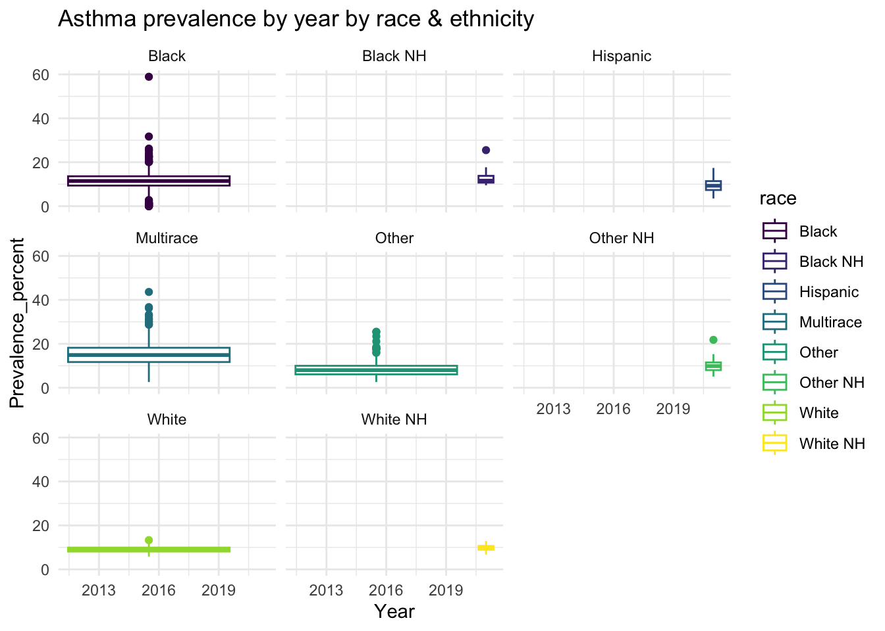
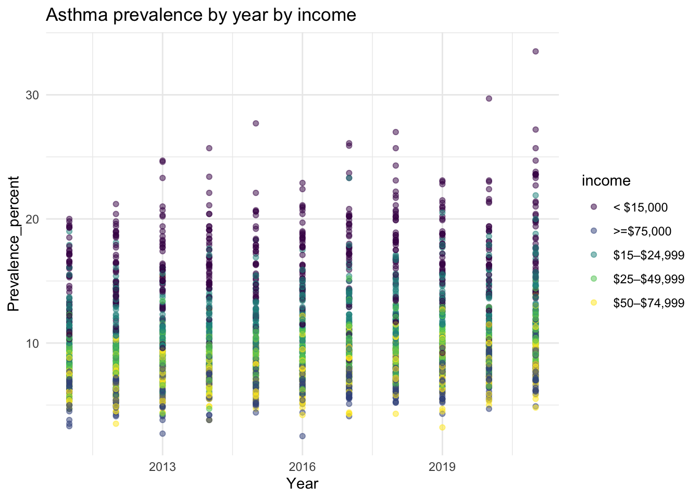

Asthma Data
For maps and figures on weather trends, please refer to the maps page.
Asthma dataset
The asthma dataset was obtained from the CDC Behavioral Risk Factor Surveillance System (BRFSS) data. While initially we wanted to use data from 2001 to 2021, there was a change in weighting method in 2011 that made data collected from the previous period incomparable with data collected 2011 onwards. Therefore, for this analysis, we only use data from 2011 to 2021 (the most recent year available) period.
For the dataset, our group use the current asthma prevalence (C) tables rather than lifetime prevalence as it captures active asthma cases during the data collection period. We also only keep relevant variables (state, race, income) and use prevalence percent rather than prevalence numbers as it better capture the different sample size each state had. Finally, we only cover the 50 states and excluding territories (PR, VI, and GU).
During the data scraping and cleaning process, we found several inconsistencies between year such as:- Different column name, for example, starting from 2016, the column for “prevalence number” in C1 data change to “weighted number”. For race data, in 2020, race designation is in column raceg while in 2021, the data is put in column race_ethnicitygcolumn.
- Missing states in several years. In 2019, the prevalence data did not include NJ while in 2021 it did not include FL.
- Superscript that is included as part of the data: For the race data, the total prevalence is listed as “U.S. totalf” in 2020 and 2021, rather than the usual “U.S. total” due to the “f” superscript.
All of these disrepancies are solved during the cleaning process.
Prevalence data
We made the function to obtain the prevalence data as they are located at different links.
asthma_hmtl = function(url) {
df =
read_html(url) %>%
html_table() %>%
bind_rows() %>%
janitor::clean_names() %>%
select(1:4) %>%
mutate(standard_error = as.numeric(standard_error)) %>%
filter(!state %in% c("U.S. Total**", "U.S. Totalf", "Territories", "PR", "GU", "VI")) %>%
mutate(prevalence_percent = as.numeric(prevalence_percent))
}Prevalence data
#prevalence
asthma_prevalence =
tibble(
year_name = 2011:2021,
data_url = c(
"https://www.cdc.gov/asthma/brfss/2011/tableC1.htm",
"https://www.cdc.gov/asthma/brfss/2012/tableC1.htm",
"https://www.cdc.gov/asthma/brfss/2013/tableC1.htm",
"https://www.cdc.gov/asthma/brfss/2014/tableC1.htm",
"https://www.cdc.gov/asthma/brfss/2015/tableC1.htm",
"https://www.cdc.gov/asthma/brfss/2016/tableC1.htm",
"https://www.cdc.gov/asthma/brfss/2017/tableC1.htm",
"https://www.cdc.gov/asthma/brfss/2018/tableC1.html",
"https://www.cdc.gov/asthma/brfss/2019/tableC1.html",
"https://www.cdc.gov/asthma/brfss/2020/tableC1.html",
"https://www.cdc.gov/asthma/brfss/2021/tableC1.html")
) %>%
mutate(asthma_byyear = map(data_url, asthma_hmtl)) %>%
unnest(asthma_byyear) %>%
select(-data_url, -sample_size, -sample_sizec, -standard_error) %>%
group_by(year_name)
asthma_prevalence %>%
mutate(year_name = as.factor(year_name)) %>%
ggplot(aes(x = year_name, y = prevalence_percent)) +
geom_boxplot(aes(fill = year_name), color = "blue", alpha = .5) +
labs(
x = "Year",
y = "Prevalence_percent",
title = "Asthma cases by year"
) +
theme_minimal()
asthma_prevalence %>%
ggplot(aes(x = state, y = prevalence_percent)) +
geom_boxplot() +
labs(
x = "State",
y = "Prevalence_percent",
title = "Asthma cases by state"
) +
theme_minimal()
Looking at the annual trend, we see that asthma prevalence show a slightly increasing trend since 2014. Looking at the states data, the highest prevalence are found in RI, ME, KY, WV and VT while the lowest prevalence are found in TX, FL, NE, LA, SD.
Race and income data
New function was developed to scrape race and income data as they had additional columns.
#function 2 for race and income data
asthma_hmtl2 = function(url) {
df =
read_html(url) %>%
html_table() %>%
bind_rows() %>%
janitor::clean_names() %>%
select(1:4) %>%
filter(!state %in% c("U.S. Total**", "U.S. Totalf", "Territories", "PR", "GU", "VI")) %>%
mutate(prevalence_percent = as.numeric(prevalence_percent))
}Race For race data, since 2021 the survey collected race and ethinicity data, so the categories are slightly different. We keep the new terms, however we merged “multi” and “multirace” as the same category to help simplify the category available.
asthma_prace =
tibble(
year_name = 2011:2021,
data_url = c(
"https://www.cdc.gov/asthma/brfss/2011/tableC4.htm",
"https://www.cdc.gov/asthma/brfss/2012/tableC4.htm",
"https://www.cdc.gov/asthma/brfss/2013/tableC4.htm",
"https://www.cdc.gov/asthma/brfss/2014/tableC4.htm",
"https://www.cdc.gov/asthma/brfss/2015/tableC4.htm",
"https://www.cdc.gov/asthma/brfss/2016/tableC4.htm",
"https://www.cdc.gov/asthma/brfss/2017/tableC4.htm",
"https://www.cdc.gov/asthma/brfss/2018/tableC4.html",
"https://www.cdc.gov/asthma/brfss/2019/tableC4.html",
"https://www.cdc.gov/asthma/brfss/2020/tableC4.html",
"https://www.cdc.gov/asthma/brfss/2021/tableC4.html")
) %>%
mutate(asthma_byyear = map(data_url, asthma_hmtl2)) %>%
unnest(asthma_byyear)
asthma_prace = asthma_prace %>%
select(-data_url, -sample_size, -sample_sizec) %>%
mutate(
race = ifelse(is.na(race), raceg, race),
race = ifelse(is.na(race), race_ethnicityg, race),
race = case_when(race == "Multi" ~ "Multirace", TRUE ~ race)
) %>%
select(-raceg, -race_ethnicityg)
asthma_prace %>%
ggplot(aes(x = year_name, y = prevalence_percent, color = race)) +
geom_boxplot() +
facet_wrap(~ race) +
labs(
x = "Year",
y = "Prevalence_percent",
title = "Asthma prevalence by year by race & ethnicity"
) +
theme_minimal()
People identified as Black and Multirace have higher asthma prevalence distribution compared to the other groups, while While and White NH have the lowest. This suggest that asthma may be correlated with race, which will be investigated further in the analysis.
asthma_prace = asthma_prace %>%
nest(race, prevalence_percent)Income data For the income data, in 2020 they used “-” instead of “–” and in 2021 they changed the upper limit in the range to <$25,000, $50,000 and $75,000 (instead of $24,999, $49,999 and $74,000). We merged the data by mutating the dash and the categories.
asthma_pincome =
tibble(
year_name = 2011:2021,
data_url = c(
"https://www.cdc.gov/asthma/brfss/2011/tableC7.htm",
"https://www.cdc.gov/asthma/brfss/2012/tableC7.htm",
"https://www.cdc.gov/asthma/brfss/2013/tableC7.htm",
"https://www.cdc.gov/asthma/brfss/2014/tableC7.htm",
"https://www.cdc.gov/asthma/brfss/2015/tableC7.htm",
"https://www.cdc.gov/asthma/brfss/2016/tableC7.htm",
"https://www.cdc.gov/asthma/brfss/2017/tableC7.htm",
"https://www.cdc.gov/asthma/brfss/2018/tableC7.html",
"https://www.cdc.gov/asthma/brfss/2019/tableC7.html",
"https://www.cdc.gov/asthma/brfss/2020/tableC7.html",
"https://www.cdc.gov/asthma/brfss/2021/tableC6.html")
) %>%
mutate(asthma_byyear = map(data_url, asthma_hmtl2)) %>%
unnest(asthma_byyear) %>%
select(-data_url, -sample_size, -sample_sizec) %>%
mutate(
income = case_when(income == "$15-$24,999" ~ "$15–$24,999", TRUE ~ income),
income = case_when(income == "$15,000–<$25,000" ~ "$15–$24,999", TRUE ~ income),
income = case_when(income == "$25-$49,999" ~ "$25–$49,999", TRUE ~ income),
income = case_when(income == "$25,000–<$50,000" ~ "$25–$49,999", TRUE ~ income),
income = case_when(income == "$50-$74,999" ~ "$50–$74,999", TRUE ~ income),
income = case_when(income == "$50,000–<$75,000" ~ "$50–$74,999", TRUE ~ income)
)
asthma_pincome %>%
ggplot(aes(x = year_name, y = prevalence_percent, color = income)) +
geom_point(alpha = 0.5) +
labs(
x = "Year",
y = "Prevalence_percent",
title = "Asthma prevalence by year by income"
) +
theme_minimal()
People in the lowest income level (<$15,000) has the highest asthma prevalence across all years while people in the highest income level (>=$75,000) has the lowest prevalence. This suggest that asthma is correlated with income, which will be investigated further in the analysis.
asthma_pincome = asthma_pincome %>%
nest(income, prevalence_percent)Complete dataset
For the final dataset that we are using in the analysis, we combine the state prevalence, race and income data into 1 dataframe. We put the race and income into a listcol as they are stratified in each state.
#asthma dataset
asthma_dataset =
inner_join(asthma_prevalence, asthma_prace, by = c("year_name", "state")) %>%
inner_join(asthma_pincome, by = c("year_name", "state")) %>%
janitor::clean_names() %>%
rename("race" = "data_x", "income" = "data_y")